Cross validation assessment of PC models¶
 of the original numerical model
of the original numerical model  has been
built up, it is crucial to estimate the approximation error, i.e. the
discrepancy between the response surface and the true model response
in terms of a suitable norm such as the
has been
built up, it is crucial to estimate the approximation error, i.e. the
discrepancy between the response surface and the true model response
in terms of a suitable norm such as the 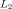
-norm: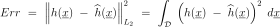
where
denotes the support of the input parameters
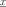
. It is worth emphasizing that one tends to overestimate the performance of a response surface by training and evaluating it on the same data set. For instance, the model might fail to predict on new data whereas the validation on the training data yields satisfactory performance. To avoid such issue, it is important that the model error assessment is conducted on a data set which is independent of the training sample. However, any new model evaluation may be time- and memory-consuming. Therefore, error estimates which are only based on already performed computer experiments are of interest. In this context, the so-called cross validation techniques are utilized to obtain reliable performance assessment of the response surface without additional model evaluations.
Any cross-validation scheme consists in dividing the data sample (i.e.
the experimental design) into two sub-samples that are independently and
identically distributed. A metamodel
is built from one sub-sample, i.e. the training set, and its
performance is assessed by comparing its predictions to the other
subset, i.e. the test set. A single split will lead to a validation
estimate. When several splits are conducted, the cross-validation error
estimate is obtained by averaging over the splits.
K-fold cross-validation error estimate
 -fold cross-validation technique relies on splitting the
data set
-fold cross-validation technique relies on splitting the
data set 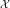
into mutually exclusive sub-samples
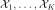
of approximately equal size. A sub-sample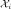
,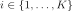
is set aside, then the response surface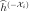
is built on the remaining sub-samples . The approximation error is estimated on the set-aside sample :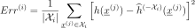
in which
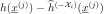
is the predicted residual defined as the difference between the evaluation of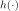
and the prediction with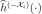
at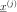
in the sub-sample whose cardinality is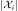
.
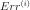
are estimated with each of the sub-samples , being used as the validation set whereas the remaining sub-samples being used for training. Finally the-fold cross-validation error estimate is obtained as the
average: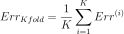
As described above, the
Classical leave-one-out error estimate
-fold cross-validation where the number of folds is
chosen equal to the cardinality  of the experimental design
. It is recalled that a
of the experimental design
. It is recalled that a  -term polynomial
approximation of the model response reads:
-term polynomial
approximation of the model response reads: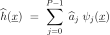
where the
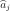
’s are estimates of the coefficients obtained by a specific method, e.g. least squares.
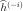
the approximation that has been built from the experimental design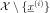
with the -th
observation
-th
observation 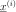
being set aside. The predicted residual is defined as the difference between the model evaluation at and its prediction based on :(1)¶
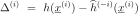
By repeating this process for all observations in the experimental design, one obtains the predicted residuals
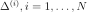
. Finally, the LOO error is estimated as follows:(2)¶
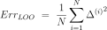
Due to the linear-in-parameters form of the polynomial chaos expansion, the quantity
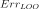
may be computed without performing further regression calculations when the PC coefficients have been estimated using the entire experimental design . Indeed, the predicted residuals can be obtained analytically as follows:(3)¶
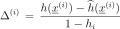
where
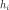
is the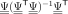
with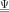
being the information matrix:(4)¶
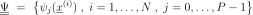
In practice, one often computes the following normalized LOO error:
(5)¶
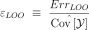
where
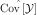
denotes the empirical covariance of the response sample:
(6)¶
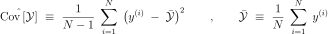
Corrected leave-one-out error estimate
A penalized variant of
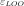
may be used in order to increase its robustness with respect to overfitting, i.e. to penalize a large number of terms in the PC expansion compared to the size of the experimental design: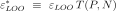
The penalty factor is defined by:
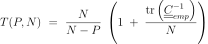
where:
(7)¶
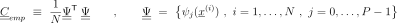
Leave-one-out cross validation is also known as jackknife in statistics.
API:
References: